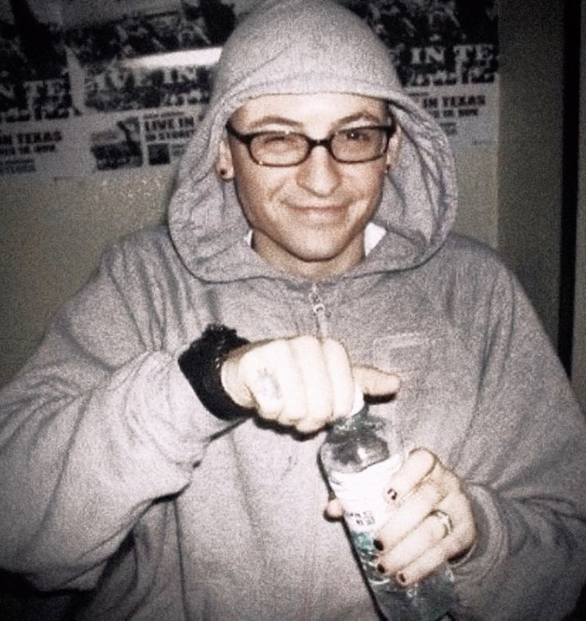

Linkin Park (LP, назва походить від Lincoln Park, укр. парк імені Лінкольна)
— американський рок-гурт
з Агора-Гіллс, Каліфорнія, створений 1996 року. Після формування гурт продав понад 60 мільйонів альбомів і отримав дві нагороди Ґреммі. З їхнім дебютним альбомом Hybrid Theory вони досягли великого успіху; 2005 року RIAA сертифікувало альбом як діамантовий (продаж понад 10 млн примірників в США та 25 млн в усьому світі). Їхній наступний альбом Meteora продовжив успіх рок-гурту й потрапив на вершину чарту Billboard 200 найкращих альбомів 2003 року, після нього був широкий благодійний тур навколо світу.
Визнаний за адаптацію ню-металу в прийнятному для широкої аудиторії форматі в Meteora та Hybrid Theory, гурт віддалився від цього і вибухнув різноманіттям стилів у їхньому альбомі Minutes to Midnight. Альбом досяг вершини в чарті Billboards Charts і мав третій найкращий дебют з-поміж інших альбомів року.
.jpg)
.jpg)
 "
"
Группа Linkin Park была основана в 1996 году тремя школьными друзьями — Майком Шинодой,
Брэдом Дэлсоном и Робом Бурдоном[25]. Изначально она называлась SuperXero, позже название
сменили на Xero. В её составе были Майк, Брэд, Джо, Дэйв, Роб и Марк. Несмотря на
ограниченные ресурсы, они начали запись нескольких песен в спальне Шиноды, которая и стала
первой студией группы. После отказов многих лейблов от контракта с группой, напряжения и недовольства
в ней становилось всё больше. В результате Марка попросили покинуть группу из-за плохого вокала[26], Дэйву
Фарреллу также пришлось оставить их, так как у его другой группы начался тур. Xero затратила значительное время
на поиски замены Марка, пока ребята не узнали об одном вокалисте, проживающем в Аризоне — Честере Беннингтоне.
Через своего знакомого Джеффа Блу, вице-президента Zomba Music, музыканты позвонили Беннингтону и попросили
выслать им запись его вокала. Беннингтон, оторвавшись от празднования своего дня рождения, записал демокассету и дал прослушать её ребятам по телефону. Его уникальный голос произвёл на группу огромное впечатление. На следующий день Честер прилетел в Лос-Анджелес. После того, как он согласился присоединиться к группе, она стала называться Hybrid Theory[27]. Идея о смешивании стилей вокала дала толчок для сочинения нового материала, что помогло возродить группу. Наступили времена перемен. У ребят возникли проблемы с британской электронной группой, которая имела название Hybrid и обвиняла их в плагиате, поэтому Честер Беннингтон придумал новое название для группы — Lincoln Park, потому что он постоянно ходил в студию именно через этот парк в Санта-Монике. Но домен lincolnpark.com был занят. В английском языке
фамилия Lincoln произносится как «линкин», и группа назвалась Linkin Park, получив домен linkinpark.com.
inkin Park начали работать над новым материалом для седьмого студийного альбома в ноябре 2015 года[56]. Честер Беннингтон прокомментировал направление альбома, заявив: «У нас есть много отличного материала, который, я надеюсь, бросит вызов нашим фанатам, а также вдохновит их так же сильно, как и нас»[57]. В феврале 2017 года Linkin Park выпустили промо-ролики в своих аккаунтах в социальных сетях, в которых участвовали Шинода и Беннингтон, готовящие новый материал для альбома[58]. Майк Шинода заявил, что группа придерживается нового процесса при продюсировании альбома. Брэд Делсон уточнил: «Мы записали очень много записей, и мы чётко знаем, как сделать альбом, и на этот раз мы определённо не выбрали лёгкий путь»[59].
Вскоре выяснилось, что первый сингл из нового альбома называется «Heavy» с участием поп-певицы Kiiara. Это был первый раз, когда группа представила вокалистку в оригинальной песне для студийного альбома. Текст песни был написан Linkin Park в соавторстве с Джулией Майклс и Джастином Трантером[англ.][60]. Сингл был выпущен 16 февраля[61][62][63]. Как и в прошлом, у Linkin Park были загадочные сообщения в сети в связи с новым альбомом. Обложка альбома была раскрыта с помощью цифровых головоломок в социальных сетях; на обложке изображены шесть детей, играющих в океане[64]. Седьмой альбом группы, One More Light, вышел 19 мая 2017 года[65]. Он содержал в себе 10 треков, из которых одноимённый и основной «One More Light» является акустическим. Звучание альбома схоже со звучанием первого сингла «Heavy». В альбоме нет скрима и тяжёлых гитар.
20 июля 2017 года вокалист и фронтмен группы Честер Беннингтон покончил с собой в своём доме в пригороде Лос-Анджелеса в возрасте 41 года[66]. Первым об этом сообщил таблоид TMZ. Спустя некоторое время Майк Шинода подтвердил смерть Честера, написав на своей странице в Twitter следующее:«Я шокирован, моё сердце разбито, но это правда. Официальное заявление будет сделано, как только возможно».>

.jpg)
2023-настоящее время: Возвращение и альбом From Zero
В 2023 году группа обратилась к Армстронг и Бриттену с предложением воссоединиться под названием Linkin Park, чтобы записать и выпустить новую музыку, а также исполнить старые песни группы[113].
30 апреля 2024 года Billboard сообщил, что агентство по бронированию Linkin Park WME приняло предложения как о потенциальном реюнион-туре, так и о выступлениях на фестивалях в 2025 году, в состав которых войдут Шинода, Делсон, Фаррелл и вокалистка вместо Беннингтона[114]. 24 августа группа, без каких-то объяснений, запустила 100-часовой обратный отсчёт до 28 августа[115], а в нулевой точке пустила его обратно, создав глитч на 09:05. На мероприятии 5 сентября Linkin Park объявили, что Эмили Армстронг из Dead Sara станет новой вокалисткой группы, а также о новом барабанщике группы Колине Бриттэне, заменившем Роба Бурдона, который решил уйти из группы. Кроме того, группа выпустила «The Emptiness Machine», главный сингл с будущего альбома группы From Zero, который выйдет 15 ноября 2024 года.